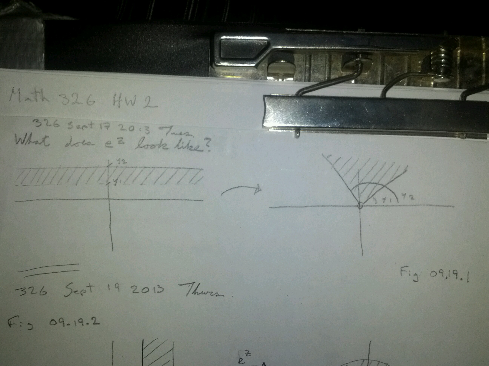

Complex Exponents, Limits & Continuity¶
Last time, visualizing \(f(z) = e^z\).

Logarithms¶
Need logarithms to define general complex exponentials.
Usually logarithm is the inverse of the exponential. But in \(\Bbb C\), \(e^z\) is not 1-1. So, we define a multivalued log.
Let \(w \neq 0\).
then, \(\log(w) := \{Ln|w|+i\theta | \theta \in arg(w)\}\)
where \(Ln: \Bbb R \to \Bbb R\) is the regular natural log on \(\Bbb R\).
Suppose \(\theta \in arg(w)\). then,
So, \(\log(w)\) is the set of points in \(\Bbb C\) that exponentiates to \(w\).
Example
“Multi-valued log is weird”
– you
Fine,
Definition
Principal Branch of Log
Example
Where is \(Log(z)\) continuous?
I haven’t defined continuity yet.

Complex Exponentials (again)¶
How did we define \(a^b\) for \(a,b \in \Bbb R\)?
So we can now define \(z^w\) where \(z, w \in \Bbb C\) and \(z \neq 0\).
Definition
potentially has \(\infty\)-many values!
What is \(i^i\)?
\(\log(i) = \{i \pi/2 + 2 \pi i k | k \in \Bbb Z\}\)
\(i \log(i) = \{=\pi/2 - 2 \pi k | k \in \Bbb Z\}\)
\(i^i = e^{i \log i} = \{e^{e^{-\pi /2 - 2 \pi k}} | k \in \Bbb Z\}\)
This is a set of infinitely many real values... bleh.
Definition
\(i^i = e^{i Log i} = e^{-\pi/2}\)
This has the same problem with branches.
This is called the principal branch of Log.
Example
\((1+i \sqrt 3)^{1+i}\) = ?
\(\log(1+i \sqrt 3) = \{Ln 2 + i (\pi / 3 + 2 \pi k) | k \in \Bbb Z \}\)
\((1+i) \log (1 + i \sqrt 3) = \{Ln 2 - (\pi/3 + 2 \pi k) + i(Ln 2 + \pi/3 + 2 \pi k) | k \in \Bbb Z\}\)
\(e^{(1+i)\log(1+i \sqrt 3)} = \{e^{Ln 2 - (\pi/3 + 2 \pi k) + i(Ln 2 + \pi/3 + 2 \pi k)} | k \in \Bbb Z\}\)
Remark
despite this definition, \(e^z\) is always defined by the principal branch.
Proposition
(# of values in \(z^w\))
- if \(w \in \Bbb Z\), \(z^w\) is single-valued.
- if \(w \in \Bbb Q\), then \(z^w\) has \(q\) values
- if \(w\) is any other point, \(z^w\) is \(\infty\)-valued